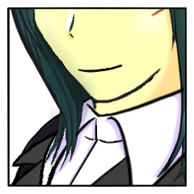
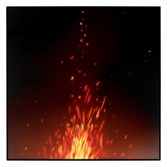

GM
それではシノビガミセッション『神楽八十神追』第六回
GM
前回は琴梨さんの手番が終わり、残すは名張さんと野葛さんの手番ですね。
GM
が、その前にRPのためのシーンを増設ということで……
とりあえず、野葛さんの秘密を持ち帰っての三人のシーンがあるとよいのかな。
GM
◆メインフェイズ第三サイクル
マスターシーン
GM
青白い月はさやけきままに、森をゆく姫君の足跡を照らす。
三榊 琴梨
月明かりに導かれるよう、また祭壇に、彼らのもとに戻ってくる。
外傷はないが、その表情は固い。
百々坂 瞠
『姫君』の去ったその後より、瞑想するように伏せていた眼を、その足音に応じて開く。
三榊 琴梨
笑顔を作る。
しかし、すぐにまた表情が強張った。
三榊 琴梨
「……ええ。『八十神』と、話をしてまいりました」
葦原 名張
「……で、『八十神』はなんて言ってた」
三榊 琴梨
「お話しすべきでは、ないのです。
絶対に」
葦原 名張
前置きの時点で、三榊 琴梨としては話す必要があるともとれる。
葦原 名張
「……俺も『八千矛』ではなく葦原 名張として聞いておきたいね」
三榊 琴梨
そう、『姫君』としては。この儀式の成就を第一に考える身としては。
決して話すべきことではない。
三榊 琴梨
それでも。
『三榊 琴梨』にとっては――
三榊 琴梨
「……『八千矛』様。申し訳ございません。
お叱りは、後程お受けいたします」
百々坂 瞠
「きみはそうして、『姫君』としての立場と、己を分けて考えることができる」
百々坂 瞠
「私にとっては、それで十分だ。
その後に何らの心配もない」
葦原 名張
礼を告げる。それだけ。
ただゆっくりと琴梨の口が開くのを待っている。
三榊 琴梨
深く、深く。
言葉を噛み締めるように、礼をするように頷いた。
三榊 琴梨
改めて決意したように、二人を順に見遣る。
三榊 琴梨
「琴梨は、このことを話さないでいたら、この先死ぬまで」
三榊 琴梨
「……いいえ、死んでも。
きっと後悔してしまう」
三榊 琴梨
「……目の前で、果て行く命を見捨てるなど」
三榊 琴梨
そして、話し出すのは――『八十神』の秘密。
祭具『羽喫鳴鏑』が、確かにそこに在るということ。
三榊 琴梨
つまり、神器を解放する手段がもう一つあり。
しかしながら、『八十神』と運命を共にする、ということ。
三榊 琴梨
決意して伝えたはずだが、その表情の苦々しさは取り繕えなかった。
百々坂 瞠
静かに語られるその真実。進み行く内容に応じるように目を細める。

百々坂 瞠
だがそれは、目の前にある苦さと全く同じ質のものというわけではない。
その実感が、瞼に反し微かに上がる口元としてにじみ出て。
葦原 名張
『姫君』としては話せず、『三榊 琴梨』としては話すことができる。
それに足るだけの『八十神』の秘密。
葦原 名張
「……50年前から、今日こうなるのは決まってたのかも知れねぇな」
百々坂 瞠
「そうなのだろうな。
有り得ざる二つの祭具、二つの神器がこの祭壇に並び立つことは」
百々坂 瞠
「それをどのような人物が持つかまでは、祭具と神器の定めの知るところではあるまい」
三榊 琴梨
祭具が二つ。故に神器が二つ。
納得のゆく話だ。
三榊 琴梨
二人を見ている。その唇が紡ぐ言葉を、聞いている。
葦原 名張
「誰かが介入してるなんてもんじゃなかったか」
葦原 名張
「………で、『八十神』も俺と同じように神器の封印を解くことができる」
葦原 名張
僅かに細めた視線をもう一人の神器を宿す女へと向ける。
百々坂 瞠
「そして封印を解かれるべき神器は、この通り二つある」
百々坂 瞠
向けられた視線へ応じるように、軽く側頭へ手を当てる。
葦原 名張
「封印が解かれなかった神器の持ち主は……」
葦原 名張
知れている結論まで口にせず、ふむと息をつく。
百々坂 瞠
形にされなかったその結論に、いま一度声で輪郭を与え直す。
三榊 琴梨
息を呑む。
とうに分かり切っていたことなのに。
けれど、その運命に直面しているのは、今や琴梨だけではないのだ。
葦原 名張
月の光が満ちる祭壇ではその形をごまかすことはできない。
はっきりとした輪郭を4人の忍は認識している。
故に、目をそらすことも許されない。
百々坂 瞠
「二つの神器と祭具が並び立つのが、此度の『神楽八十神追』の定めだったとして。
神器と祭具を誰が持つかまでは、定めとやらの知るところではない。
……幸いここにあるのは、賢く猛き『八千矛』、そして『姫君』だ」
三榊 琴梨
『八千矛』の言葉が瞠に向けられ、口を開く。
続く言葉を遮るように。
三榊 琴梨
「それをどのような人物が持つかまでは、祭具と神器の定めの知るところではあるまい」――先の、そして今も告げられた瞠の言葉がリフレインする。
三榊 琴梨
神器をどのような人物が持つか。
持つべきか。
どのような人物が『姫君』に相応しいか？
三榊 琴梨
……立ち振る舞いは、きっと自分の方が『姫君』らしいだろう。
何せ、そう在るために教育されてきた。
けれど、忍として。人として。
尊敬する瞠の方が、ずっと相応しいように思う。
日ノ本の泰平を成した後、そこに立っているのは――
三榊 琴梨
確かに、思うのに。
唇はそれを紡ごうとしているのに。
三榊 琴梨
言えなかった。
言ってしまったら、先の瞠の、名張の決意が。
無に帰してしまうような気がして。
百々坂 瞠
いかな忍びと言えど読み取れはしない。
続かずに喉の奥で消えた言葉の内容までは。
だがそこに消えた言葉のあったことには、忍びならずとも気づけるだろう。
百々坂 瞠
「……私はいつか。
こんな形でなくとも、きみの過去になる女だったさ。
つつがなく儀式を終えたとして、明日から顔を合わせるかもわからないような人間だった」
三榊 琴梨
「……そんなこと、琴梨は思ってませんでしたもの」
三榊 琴梨
「一度だって、思ったこと、なかったですもの」
三榊 琴梨
駄々をこねている。
こんなことを言っても仕方がないのに。
瞠は、少しでも自分に背負わせないようにしてくれているというのに。
百々坂 瞠
「ふふ。
私は……ずっととは言わないが。
儀が近づくごとに、きみの元を離れることを考えてきたというのにな」
百々坂 瞠
思い起こすのはあの誓いの前。
『姫君』でない、『琴梨』として漏らした小さな呟き。
「……琴梨から、お姉さままで取らないで」
百々坂 瞠
そうだ。
友との交遊、外界の眩さ、世の平穏を享受する誰もが触れるはずのありふれた日常。
自分はそれらを手放した琴梨の手元に残った、数少ない存在の一つだった。
百々坂 瞠
それが今、自ずから離れて行こうとしている。
その苦しみを、計り知るなどとは到底言えはしない。
百々坂 瞠
「だが、私はな。
……同時にずっと、楽しみだったよ」
百々坂 瞠
「きみの隣から私のいなくなるその日が。
きみが、
他ならぬきみの守る日の本の平穏を享受することを許される日なんだ」
百々坂 瞠
「私は、きみに手に入れてほしい。
これまできみが遠ざけられてきたすべて、
日の本の民のすべてが当たり前に手にしているものを」
百々坂 瞠
「私の願いは。
この儀の始まる前と後において、
何一つ変わることはないんだ」
三榊 琴梨
日の本の平穏を享受すること。
琴梨にとって、それはずっと憧れだった。
好きに外に出て、好きな店に行って、好きなものを食べる。
そんなささやかなことに、焦がれていた。
三榊 琴梨
でも、聞いてない。
お姉さまと引き換えなんて。
聞いてない！
三榊 琴梨
叫び出したかった。駄々を捏ねたかった。こんな世界に、呪いを吐きたかった。
三榊 琴梨
それでも、願われている。
ずっとずっと、大好きな姉から、確かに願われている。
三榊 琴梨
「『姫君』を、やり遂げます。
……そして、この日の本に、泰平を」
百々坂 瞠
その逡巡を無言のまま見守っていたその目を、宣誓に至って微かに瞠る。
百々坂 瞠
もう一度、言わなければならないと思っていた。
『八千矛』の抱える事情を、そう語って聞かせたと同じように。
百々坂 瞠
『姫君』たるきみは、遂げてくれるだろう、と。
三榊 琴梨
『姫君』は。
今や凛として、あなたの前に。
百々坂 瞠
「きみの他に、『姫君』を担える者など誰もいないのだから」
葦原 名張
姉の覚悟と妹の決意を見届ける。
自分自身もこの覚悟と決意に連なる道に居る。
葦原 名張
そのすべてを背負って、世界を守るために儀式へと臨むのだ。
葦原 名張
「………百々坂サン、俺もアンタに感謝してる」
三榊 琴梨
ぎゅっと拳を作る。
名残惜しさを押し込めるように。
百々坂 瞠
「向こうから出向かせるほど待たせる理由もない。
それに……話の次第によっては、万に一つの可能性はあるように思えた」
百々坂 瞠
「なかなかに人情味のある御仁だったよ。
少なくとも、私よりはよほど」
百々坂 瞠
視界の端に映る握り拳など見えなかったふりをして、
踵を返す。
百々坂 瞠
振り返らないまま、耳に残るその声を噛み締める。
三榊 琴梨
背に掛けるのは、案ずる言葉。
このくらいは。
ああ、このくらいは、言わせてくれてもいいでしょう。
百々坂 瞠
『百々坂瞠』が最後に聞くきみの声を、その言葉にしてくれて。
百々坂 瞠
その思いに微か鈍る脚を、なおも動かして。
辿り着くのは――
GM
◆メインフェイズ第三サイクル第三シーン
シーンプレイヤー：爾甁粢 野葛
爾甁粢 野葛
ではシーン表のダイスを振ります。
祭壇が出た時は振り直しをします。
爾甁粢 野葛
2d6 (2D6) ＞ 12[6,6] ＞ 12

爾甁粢 野葛
己の手指の先も見えぬほどの闇の中。
祭壇から遥か離れた地で、ゆらりと火が揺れる。
百々坂 瞠
矢の如く一迅に向かったは過去のこと。
月が雲に陰り、枝々に隠れてなお残るただ一つの灯へ向かう歩みはしずしずと。
百々坂 瞠
忍びの目ですら見通せぬ暗闇の中に、音だけは響いている。
静かな呼吸の音が、微かな衣擦れの音が、硬い革靴が地を叩く音が、
灯へと着実に近づいてくる。
爾甁粢 野葛
「……遅いな。
こうして待たせるのも、お前たちの流儀だと言うのか？」
そうして、周囲が開ければ。
小さな篝火に照らされた、異形の白装束が待ち受けていた。
爾甁粢 野葛
「お前の役割は、既に定まった筈だ。
そのように、話を済ませて来たのだろう？
この上で、俺の機嫌を損ねる利が無いことは…お前であれば良く分かる筈だが。」
百々坂 瞠
「失礼。
身辺整理というのは、実に時間がかかるものでね。
人心というのは役割のように明確に、すぐさま決まるものではない。
そのことは貴殿も重々、お分かりかと思っているよ」
百々坂 瞠
「だが……貴殿は『遅い』と思ってなお、あの子の時のような真似はしなかったわけだろう？
そのことには礼を述べておくよ」
爾甁粢 野葛
「……言葉を慎め。
俺は、どちらでも構わないだけだ。
元より、俺一人で戦い抜く心積もりだったのだからな。」
爾甁粢 野葛
「このまま、お前に祭具を与えず
徒に死に至らしめたとしても、何の呵責も無い。
そうなれば、お前は儀式の小道具と成り果てながら
何一つの用を成さないまま死んでいくのだ。」
爾甁粢 野葛
「それもまた…先祖たちの供養となるだろう。」
爾甁粢 野葛
「お前は、俺に測られていることを忘れるな。
今や、俺とお前は不可逆の立場へと変わったのだ。」
百々坂 瞠
「……ふむ」
測られている、そう警告されてなお。
まるで測る側かのように視線を注ぐ。
百々坂 瞠
「貴殿らは、我々比良坂機関を探求してなお。
その思考までは一切、我々のものを受け付けなかったと見える」
百々坂 瞠
「……ある種の高潔さとでも言おうか。
我々には辿り着けない結論だな」
百々坂 瞠
「……ああ、ご忠告をどうも。
これでも自覚は持っているつもりだがね」
そう笑って、軽く手を広げる。
爾甁粢 野葛
「……お前は、此処に何をしに来たのだ？
自身の有用さの一つでも説いて見せ、
延命を図ろうという意気すら見せる気配も無い。」
爾甁粢 野葛
「介錯を望むのなら、それは見当違いだ。
何をせずとも、お前は直に屍を晒すことになる。
もはや、この矢を向ける意味すらも無い。」
百々坂 瞠
「では、逆に問うことをお許し願いたい。
測られる者の態度としては当然に減点だろうが、
そうしておく方が互いに有益だろう」
百々坂 瞠
「どちらにせよ、暫しをもって私という人間は死に至る。
死の定めの前にある人間に、
今更もって命乞いは必要か？」
爾甁粢 野葛
「……不遜だな。
あまりに安い挑発だ。
お前の問いは、まず以って無意味だ。」
爾甁粢 野葛
「お前が死に至る覚悟を決めたとして……
俺には、それを覆す力すらあることを忘れるな。」
爾甁粢 野葛
そうして、取り出したるは祭具『羽喫鳴鏑』。
互いの眼前に掲げながら、威するように言葉を続ける。
爾甁粢 野葛
「先代が命を賭して遺した祭具。
何の役に立つものか、皆目分からずに居たが……
よもや、この様な代物とはな。」
爾甁粢 野葛
「お前の宿命は、俺の胸三寸。
俺の選択の一つで全てが決まる。」
爾甁粢 野葛
「もしも道具と化したならば、抗弁も抵抗も一切許すつもりは無い。
俺が命を賭せと言えば、お前はそうせねばならない。」
爾甁粢 野葛
「それを分かっていて…
尚も、その様に問いを発するのか？」
百々坂 瞠
何事かの口火を切ろうとした舌が、眼前のそれを目にして止まる。
息を呑む音。何かを堪えるようにくしゃりと、前髪ごと額を押さえる手。
顎を垂れ落ちて地へ向かう一滴の脂汗が、炎の灯に一瞬きらめく。
百々坂 瞠
振り乱す髪の間から。
俯いたまま零れる笑い声。
百々坂 瞠
「貴殿は……
そのように道具と化した私を、私だと捉えるか。
これほどまでに反目し合うものの操り人形になった私を？」
百々坂 瞠
「貴殿に以前、申し上げた通りだ。
道具は何を謀り、何を欺くこともない。
手にしたものへ、その扱い通りの因果をもたらす」
百々坂 瞠
「……そのようなものは。
もはやこの目の前にある女でないこと、
貴殿ならばお分かりかと思うが」
百々坂 瞠
「それでも貴殿は、
己が手によって私を生かせるとお思いか？」
爾甁粢 野葛
「……言葉を慎めと、そう言った筈だ。」
爾甁粢 野葛
「お前の個が何であるかなど、俺の関心には無い。
ただお前に似合いの末路は何れであるか、それだけだ。」
爾甁粢 野葛
「頭が高いぞ、比良坂の女。
自身を道具と思うなら……恭しく跪いて見せろ。」
百々坂 瞠
そうだ。
こうして平場に立ち会って向き合う今であれば、そうすることはできる。
あの樹上から見下ろす図でなく。
百々坂 瞠
そうして今。
目前の相手は、今一度見下ろす側に立たんとしている。
新たな主。祭具『羽喫鳴鏑』のもうひとりの主として。
百々坂 瞠
「……ああ。
貴殿は実に、私の個というものに興味がないらしいな。
私はなかなかに、貴殿の人柄を評価していたというのに」
百々坂 瞠
「ならば私も一切の個を捨てて応じるしかあるまい」
百々坂 瞠
一度は上げた頭を、またいくらか俯かせて。
逡巡にも似た数秒。
百々坂 瞠
上げた顔で真っ直ぐに見据える眼は、
どこまでも冷たく。
百々坂 瞠
「それが主に向ける言葉か？
『神楽八十神追』に供されるものよ」
百々坂 瞠
「跪くのはきさまどもだ。
いつなりときさまどもだ。この日の本の続く限りにおいて」
百々坂 瞠
神器より祭器の持ち主への言葉でもない。
命を握られる者から握る者への言葉でもない。
百々坂瞠という個の言葉でもない。
百々坂 瞠
比良坂機関からこの堅洲へ暮らすものへ、
幾度となく影に日向に投げかけられてきた言葉だ。
爾甁粢 野葛
「……それが、お前の答えか？」
意味を正すまでも無い、聞き慣れた言葉。
問いを返す声色に、濁る音が混ざる。
爾甁粢 野葛
「俺がお前に与えたのは温情だ。
機会を与え、応じる許しをくれてやったと言うのに。」
爾甁粢 野葛
「それでも、なお。
お前は、己を捨ててまで比良坂に殉じるのだと。
その様に、言うのだな？」
百々坂 瞠
一度目を伏せて、口元を歪めれば。
その声色はもう元の、『百々坂瞠』に戻っている。
百々坂 瞠
「そうして生き延びることが温情であれば、
当然貴殿らの祖を生き延びさせた我々の祖の計らいもまた、
それと数えられるのだろうな？」
百々坂 瞠
「……いや、いや。
そんな皮肉を抜きにしても、貴殿は情のある人間だよ。
私よりもよほど」
百々坂 瞠
「だが生憎と、私には情よりもずっと勝るものがあるというだけだ」
百々坂 瞠
命に勝るほどの、情があるというだけだ。
爾甁粢 野葛
「……何を言えども、退かず、譲らず。
ただ無為に挑発を重ねて、こちらの怒気を煽り続ける。」
爾甁粢 野葛
「狂気そのものだな。
比良坂の有り様と言うものは。」
爾甁粢 野葛
『羽喫鳴鏑』を手にしたまま、その足を前に。
彼我の距離を詰めていく。
爾甁粢 野葛
「…もう一度だけ言う。
跪き、頭を垂れて見せろ。
そうすれば、お前の非礼は児戯として許す。」
百々坂 瞠
「幾度も私を殺す好機はあった。
そのすべてを逸する」
百々坂 瞠
その一歩一歩の歩みに合わせるように、
口だけが歌うように動いている。
百々坂 瞠
「この鬼どもの籠の中にあるあの子の境遇に、
哀れを感ずる」
百々坂 瞠
「……有無を言わせなければいいものを。
これほどまでに躊躇する」
百々坂 瞠
「我々は貴殿らから牙を奪い、世界を奪い、未来を奪った」
百々坂 瞠
「だが……
その人間性とも呼ぶべき情感は、とうとう奪えなかったらしい」
百々坂 瞠
開いた視界は今や、すっかりと白に埋まっている。
その眼前に『羽喫鳴鏑』を認めれば、再び顔を歪めて。
百々坂 瞠
そうして、その距離まで近づいたのなら、見て取ることができる。
百々坂 瞠
以前目にしたときよりずっと、
女の肌が蒼ざめていることを。
爾甁粢 野葛
「…言葉が多い。
是か、非か。或いは、それに準じる簡潔な言葉で答えろ。
お前たちが常日頃、我々に物を尋ねる時にするように。」
百々坂 瞠
「つれないものだな。
言った通り、私は貴殿を評価しているんだよ。
決して悪くないものとして」
百々坂 瞠
「だが今ばかりは、貴殿らの流儀に従おう。
何しろ私は命を握られているのだからな」
爾甁粢 野葛
「……いかなる時も尊大に振舞うのが、比良坂たるお前の常。
その高慢な顔を見下ろす光景は、さぞや胸の空くものだと」
爾甁粢 野葛
「そう、思っていたのだがな。」
言葉と共に、『羽喫鳴鏑』を高く振り上げて。
爾甁粢 野葛
隠忍と、比良坂が立つ場所の間。
その地面の上に『羽喫鳴鏑』が落ちて音を立てた。
爾甁粢 野葛
「お前の言う通り、こんなものは比良坂の猿真似だ。
その儘ならぬ命運を天秤に乗せ、尊厳を踏みにじるなどと。」
爾甁粢 野葛
「その者の個を投げ捨てさせ、恣にしようなどと。」
爾甁粢 野葛
地に『羽喫鳴鏑』を撒いたまま踵を返して。
僅かに距離を取るや、再び比良坂を見る。
百々坂 瞠
見据える鏑の軌跡は、ついに自分には至らぬまま地に落ちて。
百々坂 瞠
暫し祭具を、
何の価値もないかのようにうち捨てられたそれを、見下ろした後に。
百々坂 瞠
「……貴殿らは我々のことを、よく見知っていたが。
それでいてついに、
己の憎んだものに堕ちる愚を選ばなかったか」
百々坂 瞠
「先は、貴殿らの保ったものを情感と。人間性と呼んだな。
謹んで訂正しよう」
百々坂 瞠
「幾千年を経て、貴殿らの保ったそれは。
おそらくは、誇りと呼ぶべきだ」
爾甁粢 野葛
「言った筈だ。
俺は、どちらでも構わないと。」
百々坂 瞠
種の黄昏などとうに過ぎ越し。
まさにこの場のような闇のなかに、
消えることなく灯った光がある。
百々坂 瞠
首を垂れた覚えなぞないが、
今の自分は確かに、
その夜に残った星を見上げ、それに生かされるばかりの泥中の魚に過ぎない。
爾甁粢 野葛
「世辞を聞くつもりは無い。
お前が決めろ。
お前が、自身に殉じると嘯くのなら。
己の宿命は、その手で決してみろ。」
爾甁粢 野葛
「……かの『姫君』も。
お前が"決めるべき"と、そう言っていたぞ。」
百々坂 瞠
不意に出た思いもよらぬ名に、いささか驚いた様子を見せる。
もはや隠しもせずに。
百々坂 瞠
「あの子が。……だが、
その言葉を聞き届け尊重したのは、まぎれもない。
貴殿だよ」
百々坂 瞠
そうして一歩、地に落ちた『羽喫鳴鏑』へ歩み寄って、
爾甁粢 野葛
「…どちらの選択を経たとして、お前の行く末は塞がっている。
死か、或いは裏切りの業を負うことになるか。
いずれの形にせよ…お前は、かの姫君を悲しませることになる。」
爾甁粢 野葛
「これはお前たちの因果が産んだ宿命だ。
…お前の行為が生む意味を、分かっているのだろな？」
百々坂 瞠
「その通りだ。
私という人間の道程はここで終わる」
百々坂 瞠
「どちらにせよ、私はあの子の前から消える人間だったし……
あの子はもう、私がなくともやっていけるさ」
爾甁粢 野葛
「…それもまた、比良坂としての矜持が故か？
恥を啜り生きて機会を待とうとするのもまた、お前たちの生き方であろうに。」
爾甁粢 野葛
「或いは、俺に飼い殺されることに耐えられぬと考えたか。」
百々坂 瞠
「扱いに見合った因果を返すのが、道具だ。
例外はない。神器、祭具。……そして、人間もだよ」
百々坂 瞠
「私とて、あの子を道具とする一助を担ったものの一人だ。
幸いにして、あの子がそれを恨んでいないだけ。
……その因果を引き受けるのならば、むしろ当然のこと」
爾甁粢 野葛
「……そして、お前の死から生じる業を俺に負わせようと企む腹ということか。
激しい情動によりかの娘を奮い立たたせ…儀式遂行の活力を漲らせる道具として果てることでな。」
爾甁粢 野葛
蹴り飛ばされた祭具を、一瞥し。
再び、そちらに視線を戻して。
爾甁粢 野葛
「…一つ、言っておく。
俺が開く新しき世に、お前たち比良坂の痕跡は塵の一つも残すつもりはない。」
爾甁粢 野葛
「そうなれば、お前の選んだ死は全て無為に終わる。
あの娘は誰も縋る者も無いまま、箱の中で衰え、その生を終えることになるだろう。」
百々坂 瞠
「あの子が言ったのだろう？ 私がどうなるかは、私が決めるべきだと。
そう言ったのならば、
私がどうなってあの子の前に現れようと。あるいは私が現れまいと、
あの子は貴殿を恨むようなことはないさ」
爾甁粢 野葛
「…お前は、かの娘がいかなる末路を辿ろうと……
それを全て許容する選択であると、そう言うのだな？」
百々坂 瞠
「そうだ。
そして、比良坂機関さえも」
百々坂 瞠
「『神楽八十神追』を制した者に与えられる力とは、そういうものだ。
我々の祖が貴殿らの祖をこの堅洲へ囲ったように。
表の世よりこの堅洲も、貴殿らの存在をも抹消したように」
百々坂 瞠
「そして私は、
その行く末さえもこの目にすることはかなわない。
……それで構わないさ」
爾甁粢 野葛
「…お前が、一度でも首を縦に振るのならば……
新たな国母となる者の世話役として、似合わぬ泥臭い雑事に使ってやることも考えたのだがな。」
爾甁粢 野葛
「死を決したお前に……
いかなる言葉も、もはや響くことはあるまい。」
百々坂 瞠
「最期の時を共にする相手として、申し分ない」
爾甁粢 野葛
「……お前たちを嫌悪しているだけだ。」
GM
それでは『神楽八十神追』第六回、これにて了です。
GM
次は野葛さんのシーンから再開です。
クライマックス前のクライマックス、頑張ってください……！